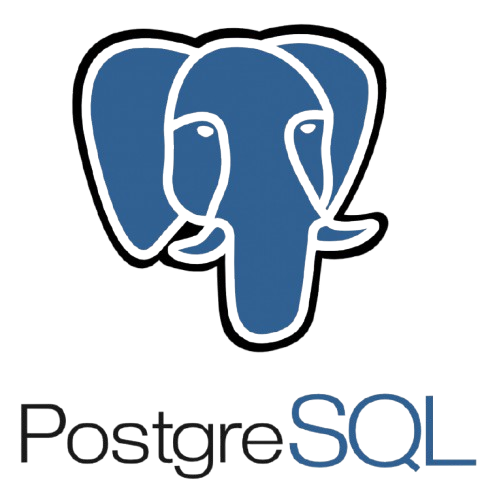
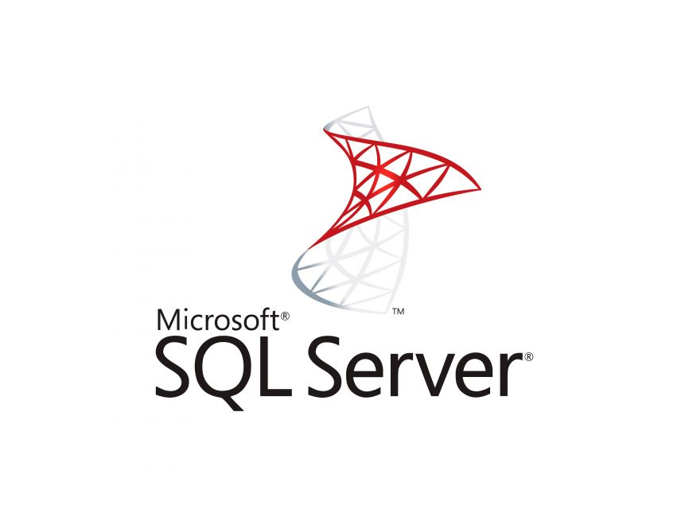
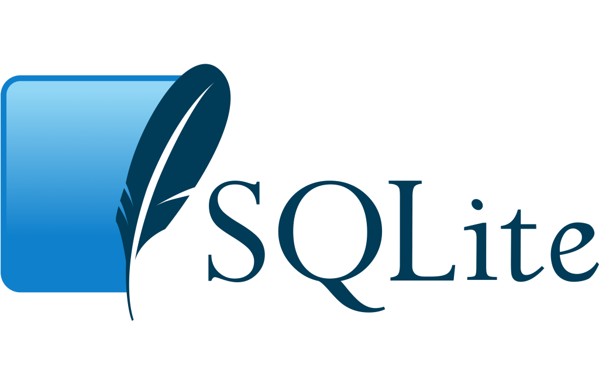

Релационни бази данни
Системи за управление на структурирани данни, които използват SQL и връзки между таблици
MySQL
Какво е MySQL?
MySQL е една от най-популярните системи за релационни бази данни. Първоначално MySQL е решение с отворен код, а сега е собственост на Oracle Corporation. Днес MySQL е стълб на приложния софтуер LAMP. Това означава, че тя е част от стека Linux, Apache, MySQL и Perl/PHP/Python. С помощта на C и C++ под капака, MySQL работи добре със системни платформи като Windows, Linux, MacOS, IRIX и други.
Ключови характеристики
- Опростен синтаксис и лека сложност
- Съвместимост с облака.
Структурата и стилът на MySQL са много прости. Разработчиците дори смятат, че MySQL е база данни с език, подобен на човешкия. MySQL често се използва в тандем с езика за програмиране PHP. Тъй като те споделят лека крива на обучение, е много по-лесно да се сформира екип за управление на вашата база данни. Освен това MySQL е лесна за използване. Например повечето от задачите могат да се изпълняват направо в командния ред, което намалява стъпките за разработка.
Ориентирана към бизнеса по природа и първоначално разработена за уеб, MySQL се поддържа от най-популярните доставчици на облачни услуги. Тя е налична във водещи платформи като Amazon, Microsoft и други. Това прави MySQL още по-привлекателна и дава възможност за развитие на бизнеса.
Случаи на употреба
- Малки уеб базирани решения
- OLAP/OLTP системи
- Приложения за интернет на нещата
Системата за бази данни MySQL е най-добрият вариант, когато проектирате малко уеб базирано решение с малък обем данни. Например при изграждането на локален магазин за електронна търговия MySQL може да ви бъде полезна.
Това е един от най-добрите случаи на използване на база данни MySQL, тъй като OLAP/OLTP не изискват сложни заявки и големи обеми от данни. Също така, обмислете прилагането на MySQL по същата причина, ако изграждате инструмент за бизнес разузнаване.
MySQL може да се използва за малки и средни по размер приложения за интернет на нещата (IoT) за съхраняване и управление на данни от сензори, информация за устройства и взаимодействия с потребители.
MariaDB
Какво е MariaDB?
MariaDB, разклонение на MySQL с отворен код, е чудесен пример за SQL база данни с търговска поддръжка. Тя работи под общия публичен лиценз на GNU и има подобни команди, API и библиотеки като MySQL.
Ключови характеристики
- Криптиране
- Широка функционалност
- Висока производителност
За MariaDB отвореният код не означава несигурност. В допълнение към вътрешната сигурност и проверката на пароли MariaDB предоставя такива функции като PAM и LDAP удостоверяване, Kerberos и потребителски роли. В комбинация с криптираните пространства за таблици, таблици и дневници, това създава надежден защитен слой за данните. Освен това MariaDB публикува свързаните с нея версии на всяка актуализация на сигурността, като запазва пълната прозрачност на кръпките по сигурността.
През последните няколко години MariaDB въведе много нови функции. Например, поддръжката на ГИС предполага безпроблемно съхранение на координати и заявки за данни за местоположението. Динамичните колони позволяват на една СУБД да предоставя както SQL, така и NoSQL обработка на данни за различни нужди. Можете също така да разширите функционалността ѝ с помощта на плъгини, които са налични в MySQL само чрез трети страни. MariaDB се доставя с двигатели за съхранение за NoSQL бекенд, инструменти за миграция на наследени бази данни, опции за sharding и много други.
Въпреки че MariaDB произхожда от двигателя на MySQL, тя е стигнала много далеч по отношение на производителността. Обширните функции за оптимизация подобряват управлението на пула от нишки и обработката на данни. Така, когато се изтриват редове от таблица, операционната система незабавно получава достъп до свободното пространство, като по този начин се елиминират празнините в пространството на таблицата. На всичкото отгоре системата за управление на бази данни предлага независими от двигателя статистики за таблиците. Тази функция повишава производителността на оптимизатора, ускорява обработката на заявките и помага за персонализиране на анализа на данните.
Случаи на употреба
Тъй като MariaDB е близка до MySQL, тя може да се използва за работа със същите видове уеб базирани приложения. Освен това получавате разширено съхранение на данни за местоположението, по-висока производителност и подобрена мащабируемост.
Oracle
Какво е Oracle?
Oracle е релационна система за управление на бази данни, създадена и управлявана от Oracle Corporation. Сред всички видове SQL бази данни Oracle се отличава с изключителна популярност. Понастоящем тя поддържа множество модели на данни, като документ, граф, релация и ключ-стойност, в рамките на една база данни. В последните си версии тя се преориентира към изчислителните облаци. Лицензирането на двигателя за бази данни на Oracle е изцяло собствено, като се предлагат както безплатни, така и платени варианти.
Ключови характеристики
- Иновации за ежедневния работен процес
- Силна техническа поддръжка и документация
- Голям капацитет
Като се започне от изданието Oracle 12c, когато софтуерът навлезе в ерата на хибридните облаци, редовно се появяват нови технологии за изчисления в облака. С всяка нова версия Oracle се опитва да бъде в крак с темпото на иновациите, като същевременно се фокусира върху информационната сигурност, включително активна защита на данните, разделяне на дялове, подобрено архивиране и възстановяване.
Oracle осигурява прилична поддръжка на клиентите и предоставя изчерпателна техническа документация в множество ресурси. Така че вероятно ще намерите решения на всички възникнали проблеми. Може да очаквате и известна подкрепа от общността.
Многомоделното решение на Oracle позволява да се побира и обработва огромно количество данни. Благодарение на наскоро пуснатата функция за многофункционалност, архитектурата на базата данни вече опростява опаковането на много бази данни и ги управлява безпроблемно. В комбинация с възможностите за обработка на данни в паметта тя създава силен двигател за синхронна обработка на данни.
Случаи на употреба
- Мащабни корпоративни приложения
- Финансови институции
- Държавен и публичен сектор
Като се имат предвид всички тези предимства и капани, можете да разгледате СУБД Oracle като разумно решение за онлайн OLTP, складове за данни и дори смесени (OLTP и DW) приложения за бази данни. Ако трябва да съхранявате и управлявате милиарди записи - и имате достатъчен бюджет за поддържането им - хибридният облачен софтуер на Oracle е добър вариант.
Oracle се използва широко във финансовия сектор, където целостта и сигурността на данните са от първостепенно значение. Банките, застрахователните компании и инвестиционните посредници често разчитат на Oracle за управление на чувствителни финансови данни и транзакции.
Oracle често се избира заради надеждните си функции и сигурност в приложенията за правителствения и публичния сектор, включително националната сигурност, здравеопазването и транспортните системи.

PostgreSQL
Какво е PostgreSQL?
Системата за управление на бази данни PostgreSQL споделя своята популярност с MySQL. Това е обектно-релационна СУБД, при която се комбинират дефинирани от потребителя обекти и подходи за таблици, за да се изградят по-сложни структури от данни. Освен това PostgreSQL има много сходства с MySQL. Тя е насочена към укрепване на стандартите за съответствие и разширяемост. Следователно тя може да обработва всякакво работно натоварване, както за продукти с една машина, така и за сложни приложения. Притежаван и разработван от PostgreSQL Global Development Group, той все още остава с напълно отворен код. Тази СУБД е достъпна за използване с платформи като Microsoft, iOS, Android и много други.
Ключови характеристики
- Голяма мащабируемост
- Поддръжка на потребителски типове даннис
- Лесно интегрирани инструменти на трети страни
- Поддръжка с отворен код и насочена към общността
Вертикалната мащабируемост е отличителна черта на PostgreSQL. Като се има предвид, че почти всяко персонализирано софтуерно решение има тенденция да расте, което води до разширяване на базата данни, тази конкретна опция със сигурност подпомага растежа и развитието на бизнеса.
PostgreSQL поддържа много типове данни по подразбиране, като JSON, XML, H-Store и други. PostgreSQL се възползва от това, тъй като е една от малкото релационни бази данни със силна поддръжка на NoSQL функции. Освен това тя позволява на потребителите да дефинират свои собствени типове данни. Тъй като вашият софтуерен бизнес модел може да се нуждае от различни типове бази данни през цялото си съществуване за по-добра производителност или всеобхватност на приложението, тази опция внася подобрена гъвкавост.
Системата за управление на бази данни PostgreSQL има силна поддръжка от допълнителни инструменти, както безплатни, така и комерсиални. Обхватът им включва разширения за подобряване на много аспекти. Например ClusterControl осигурява впечатляваща помощ при управлението, наблюдението и мащабирането на SQL и NoSQL бази данни с отворен код. За да направите сравняването и синхронизирането на данни по-ефективни, помислете за използването на DB Data Directive. В случай че ще мащабирате данните си до големи натоварвания, системата за архивиране и възстановяване pgBackRest ще бъде хубав вариант, от който да изберете.
PostgreSQL е с изцяло отворен код и се поддържа от своята общност, което го укрепва като цялостна екосистема. Освен това разработчиците винаги могат да очакват безплатна и бърза помощ от общността.
Случаи на употреба
Благодарение на сложните заявки и големия избор от потребителски интерфейси, осъществени с предварително дефинирани функции, PostgreSQL е идеален избор за анализ и складиране на данни. Ако изграждате инструмент за автоматизация на бази данни, PostgreSQL е най-подходящият за него поради силните си аналитични възможности, ACID съответствие и мощния си SQL двигател. Като цяло той значително ускорява обработката на огромни количества данни. Тази СУБД е популярна сред финансовите институции и телекомуникационните системи.

MSSQL
Какво е MSSQL?
Като изцяло комерсиален инструмент, Microsoft SQL Server е една от най-популярните релационни СУБД, в допълнение към MySQL, PostgreSQL и Oracle. Тя се справя добре с ефективното съхраняване, промяна и управление на релационни данни. За да взаимодействат с базите данни на SQL Server, инженерите по БД обикновено използват езика Transact-SQL (T-SQL), който е разширение на стандарта SQL.
Ключови характеристики
- Разнообразие от версии
- Цялостно решение за бизнес данни
- Богата документация и помощ от общността
- Поддръжка на облачни бази данни
Microsoft SQL Server предоставя широк избор от различни варианти с разнообразни функционалности. Например изданието Express с безплатна база данни предлага инструменти от начално ниво, които са идеално подходящи за обучение и изграждане на настолни или малки сървърни приложения, базирани на данни. Опцията Developers позволява изграждане и тестване на приложения, включително някои корпоративни функционалности, но без лиценз за производствен сървър. За по-големи проекти има и издания Web, Standard и Enterprise, с различна степен на административни възможности и нива на обслужване.
С фокус предимно върху търговски решения, MSSQL предоставя много функции с добавена стойност за бизнеса. Незадължителният избор на компоненти позволява изграждане на ETL решения, формиране на база от знания, както и прилагане на клиринг на данни. Също така предоставя инструменти за цялостно администриране на данни, онлайн аналитична обработка и извличане на данни, като допълнително предлага решения за генериране на отчети и визуализации.
Тъй като Microsoft SQL Server е насочен към цялостна поддръжка на бази данни, пълната онлайн документация също отразява тази концепция. Съответно структурираните ръководства, многобройните бели книги и демонстрационни версии дават пълна представа за системата за данни MSSQL. Освен това Microsoft Premier осигурява достъп до специализирана поддръжка от общността на Microsoft, което е предимство, когато инженер по БД се нуждае от помощ.
Част от последователната екосистема на Microsoft, MSSQL може да бъде интегрирана с Microsoft Cloud, Azure SQL Database или SQL Server на Azure Virtual Machines. Решенията позволяват преместване на администрирането на базата данни в облака, ако базата данни на вашия бизнес софтуер стане наистина претоварена и трудна за администриране.
Случаи на употреба
MSSQL Server е разумен вариант за компании, които имат абонаменти за други продукти на Microsoft. Тъй като Microsoft изгражда стабилна екосистема с безпроблемна интеграция на услугите, MSSQL се очертава като мощно решение за бази данни. Със своята достъпност в облака и усъвършенствани инструменти за извличане на данни MSSQL се оказва ценен актив за бизнеса, осигурявайки устойчива и ефективна система, която съответства на развиващите се нужди.

SQLite
Какво е SQLite?
SQLite е самодостатъчна система за управление на бази данни без сървър и без необходимост от конфигурация. Често използвана като вградена база данни, тя е популярна за малки мобилни и настолни приложения.
Ключови характеристики
- Малка по размер и лесно преносима
- Минимално потребление на ресурси
- Надежден и лесен за използване
SQLite е рационализиран механизъм за бази данни, който работи без отделен сървърен процес. Цялата база данни се съдържа в един мултиплатформен дисков файл, което повишава нейната преносимост и опростява интегрирането ѝ в приложения.
SQLite е проектиран за оптимална ефективност на паметта и дисковото пространство, което го прави идеален избор за приложения с ограничени ресурси, като например тези, които се срещат в мобилните устройства и устройствата IoT.
SQLite е ACID-съвместима база данни, която гарантира целостта и последователността на данните. Освен това тя е лесна за настройка и изисква минимална конфигурация.
Случаи на употреба
SQLite е подходящ за скромни по размер приложения и мобилни и настолни приложения, които изискват лека, лесно преносима и удобна за ползване база данни. Подходящ е и за вградени системи и устройства на интернет на нещата с ограничени ресурси, където внедряването на сървърна СУБД би било неосъществимо.